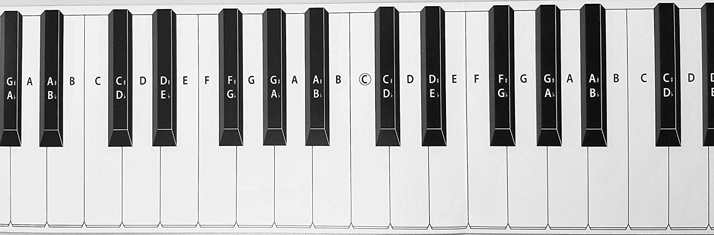
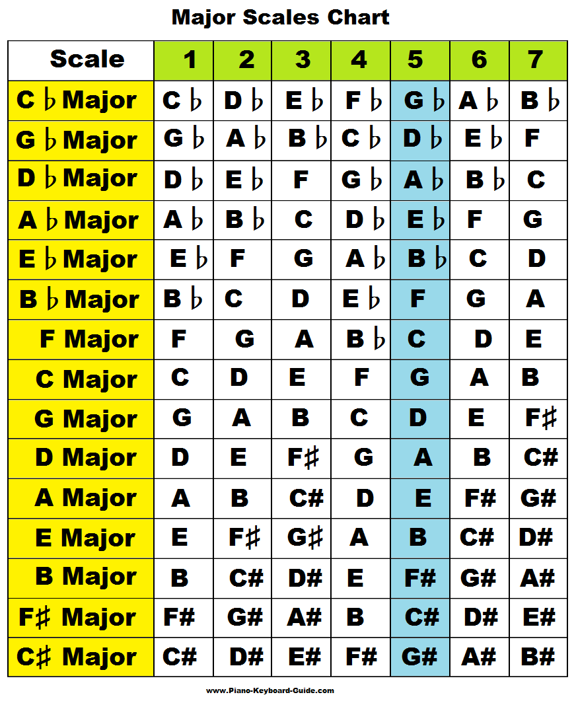
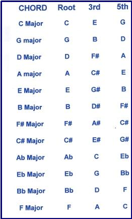
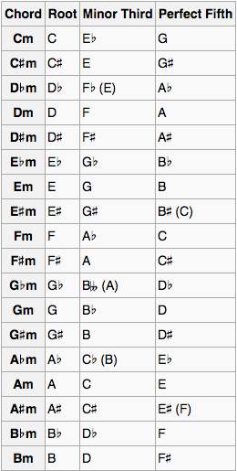

General
Our Western system of music has 12 unique notes
1: C
2: C#/Db
3: D
4: D#/Eb
5: E
6: F
7: F#/Gb
8: G
9: G#/Ab
10: A
11: A#/Bb
12: BThat’s it. So, if you walk up to a piano and see 88 keys, what you’ll find is that the entire bed of piano keys is just a sequence of these 12 different notes repeated over and over from the bottom to the top in this order (see the keyboard image below)
The reason that notes 2, 4, 7, 9 and 11 have “two different names” isn’t really important right now, just know that they mean the same thing. You can read about it here later: Enharmonic Notes
Summary
- A key is a collection of 7 notes that tend to sound good together
- There are 12 keys
- The notes of each of the 12 keys can be “derived” by applying a pattern to each of the starting notes. You can read more in the Intervals - Scale/Chord Qualities section below
Modes/Scales
Each key is a collection of 7 unique notes
# Example
"The key of C" has these 7 unique notes:
C, D, E, F, G, A, BIf I mix those notes around in any way, I’m still describing the notes which make up the identity of “the key of C”
# Example
Original:
C, D, E, F, G, A, B
Moving the first note to the end:
D, E, F, G, A, B, C
Scrambling them randomly:
F, C, E, A, G, B, D
etc.If we sort the notes of a key into a certain order, then change the sequence of notes by repeatedly moving the first note to the end, we get 7 unique scales
# Example
If these are the notes of C
(in no particular order):
F, C, E, A, G, B, D
Then we first need to sort
them into this form
(sort of alphabetical):
C, D, E, F, G, A, B
And we then repeatedly shift the first
note to the last position, and take
a snapshot after each iteration.
We end up with this:
1 (Original): C, D, E, F, G, A, B
2: D, E, F, G, A, B, C
3: E, F, G, A, B, C, D
4: F, G, A, B, C, D, E
5: G, A, B, C, D, E, F
6: A, B, C, D, E, F, G
7: B, C, D, E, F, G, A
8: C, D, E, F, G, A, B (Original)You’ll notice that iterations 1 and 8 are identical, so iterations 1-7 (inclusive) provide unique sequences (scales) utilizing the 7 unique notes of the key
Those 7 unique scales are known as “the modes of the key”, and they have special names, named after their starting note
# Example
Here are the 7 "modes" of the key of C
Original, sorted version:
C, D, E, F, G, A, B
"Mode 1 of the key of C":
= "C Ionian": C, D, E, F, G, A, B
"Mode 2 of the key of C":
= "D Dorian": D, E, F, G, A, B, C
"Mode 3 of the key of C"
= "E Phrygian": E, F, G, A, B, C, D
"Mode 4 of the key of C"
= "F Lydian": F, G, A, B, C, D, E
"Mode 5 of the key of C"
= "G Mixolydian": G, A, B, C, D, E, F
"Mode 6 of the key of C"
= "A Aeolian": A, B, C, D, E, F, G
"Mode 7 of the key of C"
= "B Locrian": B, C, D, E, F, G, AThe 1st and 6th modes are extra special and have nicknames: Major and Minor, respectively. These are the most commonly used scales in Western music
# Example
Original, sorted version: C, D, E, F, G, A, B
Mode 1 - C Ionian: C, D, E, F, G, A, B (aka "C Major")
Mode 6 - A Aeolian: A, B, C, D, E, F, G (aka "A Minor")For the key of C, one can colloquially say that “C Major” is “the major scale of the key of C”, and that “A Minor” is “the minor scale of the key of C”
It is for this reason that the scale of A minor is referred to as the “relative minor (scale)” of the key of C. Whereas the scale of C minor is referred to as the “parallel minor (scale)” of the key of C
Confusing: Though there are two special modes with “Major” and “Minor” in their nicknames, there are actually 3 total modes which are major scales, and 4 total modes which are minor scales
# Example
Here are the 7 "modes" of the key of
C with their "major" and "minor" designations
Original, sorted version:
C, D, E, F, G, A, B
"Mode 1 of the key of C":
= "C Ionian": Major
"Mode 2 of the key of C":
= "D Dorian": Minor
"Mode 3 of the key of C"
= "E Phrygian": Minor
"Mode 4 of the key of C"
= "F Lydian": Major
"Mode 5 of the key of C"
= "G Mixolydian": Major
"Mode 6 of the key of C"
= "A Aeolian": Minor
"Mode 7 of the key of C"
= "B Locrian": MinorAs you can see, Modes 1, 4 and 5 are major, and Modes 2, 3, 6 and 7 are minor
After reading the next section, you’ll notice the pattern applies there too (though, you’ll notice that #7 is different there)
The reason these different scales are considered major and minor is covered in the Intervals - Scale/Chord Qualities section below
Chords/The NNS
(Nashville Number System)
On any particular scale, we can refer to their particular notes as “scale degrees”
# Example
The scale degrees of the scale: "C Major"
(Original, sorted version:
C, D, E, F, G, A, B)
"Scale degree #1": C
"Scale degree #2": D
"Scale degree #3": E
"Scale degree #4": F
"Scale degree #5": G
"Scale degree #6": A
"Scale degree #7": BThe simplest type of chord is typically acknowledged to contain 3 notes, and is referred to as a “triad”
Triads are constructed by choosing a note in a scale, and adding 2 more notes to it by going up the scale and skipping a note each time
# Example
Triads are constructed like so
The scale of C Major repeated twice:
1 2 3 4 5 6 7 1 2 3 4 5 6 7
C, D, E, F, G, A, B, C, D, E, F, G, A, B
1 2 3 4 5 6 7 1 2 3 4 5 6 7
Triad 1: (C), D, (E), F, (G), A, B, C, D, E, F, G, A, B
Triad 2: C, (D), E, (F), G, (A), B, C, D, E, F, G, A, B
Triad 3: C, D, (E), F, (G), A, (B), C, D, E, F, G, A, B
Triad 4: C, D, E, (F), G, (A), B, (C), D, E, F, G, A, B
Triad 5: C, D, E, F, (G), A, (B), C, (D), E, F, G, A, B
Triad 6: C, D, E, F, G, (A), B, (C), D, (E), F, G, A, B
Triad 7: C, D, E, F, G, A, (B), C, (D), E, (F), G, A, BNotice: Triad 1 is a triad built on the first scale degree, Triad 2 is a triad built on the second scale degree, etc.
For reasons that don’t matter right now, triads 1, 4 and 5 are referred to as “Major Triads” and triads 2, 4, and 6 are referred to as “Minor Triads”, and triad 7 is referred to as a “Diminished Triad”. If you’re curious, you can read more below (later) in the Intervals - Scale/Chord Qualities section
The words “Major”, “Minor” and “Diminished” are referred to as “Chord Qualities”, which attempt to describe the general qualities of how a chord sounds. Major tends to be “brighter” overall. Minor tends to be “darker” overall. Diminished tends to be kind of “dark and tense”
The 7 triads of a scale can also be referred to with roman numerals (a notation used in the Nashville Number System), like this:
1 2 3 4 5 6 7
I ii iii IV V vi vii°Where capital letters imply that the chord is Major, and lowercase letters imply that the chord is Minor. Then the lowercase letters and degree symbol together mean the chord is Diminished
Chord Progressions
Western music is made up of 3 fundamental ideas: Melody, Harmony, and Rhythm
The “Harmony” part of music implies that chords are used
The usage of chords in music typically involves a repeating sequence, known as a “Chord Progression”
# Example (Using the NNS notation)
Chord Progression #1: 1-5-6-4 = I-V-vi-IV
Chord Progression #2: 1-4-6-5 = I-IV-vi-V
Chord Progression #3: 4-1-6-5 = IV-I-vi-V
Chord Progression #4: 4-6-1-5 = IV-vi-I-V
Chord Progression #5: 6-4-1-5 = vi-IV-I-VThese chord progressions are commonly used today in contemporary music genres, such as rock, pop, country and metal
Harmony and Melody
How the harmony and melody of a song interact is hugely important to how the music sounds
If a IV chord (contains scale degrees 4-6-1) is being played for the harmony and the melody is playing scale degree 4, the note will “feel at rest”
This is because the melody’s scale degree 4 sort of “slots into” the first note of the harmony’s IV chord (which is also scale degree 4) and this produces a stable sound
If a IV chord (contains scale degrees 4-6-1) is being played for the harmony and the melody is playing scale degree 6, the note also will “feel at rest”
This is because the melody’s scale degree 6 sort of “slots into” the second note of the harmony’s IV chord (which is also scale degree 6) and this produces a stable sound
If a I chord (contains scale degrees 1-3-5) is being played for the harmony and the melody is playing scale degree 4, the note will “feel unstable”
This is because the melody’s scale degree 4 has no harmony notes to “slot into”. The harmony note which is the closest to the melody note is the second note of the harmony’s I chord (scale degree 3)*. Because the melody note is closest to the second harmony note, there is a sort of “gravity” pulling the melody note to the second harmony note. This “gravity” can actually be heard, and provides a feeling of “tension” to the listener
Thus, if the harmony is playing a I chord, and the melody is playing scale degree 4, this produces an unstable sound
*Why is scale degree 4 closest to scale degree 3? Why not scale degree 5?
This is covered in the next section Intervals - Scale/Chord Qualities section (below)
Intervals - Scale/Chord Qualities
This section assumes you’ve read The 3 Pillars of Musical Ability and everything on this page so far
Deriving a key from its root note
As mentioned before, there are 12 unique notes in Western music, and there are 12 keys (there’s more to this, but you’ll have to get pretty advanced for it to matter), one key that starts with each unique note
Also, as mentioned before, each of the 12 keys can be “derived” by applying a pattern to each of the starting notes. Take a look at this keyboard:
Note: There are groups of black keys in a repeating sequence of 2, then 3. The C note can be located by finding a group of 2 black keys, then selecting the white key just to the left of the leftmost black key in that group of 2 black keys.
# Example
In the piano image above, the first
group with 2 black keys that we can
completely see is the notes:
(C#/Db, D#/Eb)
And the next group has 3 black keys:
(F#/Gb, G#/Ab, A#/Bb)
We can visually select the first
group containing only 2 black
keys and then visually locate the
first white key to the left of
the note: C#/DbAfter having located the C note, notice that the (C#/Db) key sort of “separates” the C and D keys on the piano. This might be a helpful image to remember that the “distance” between the C and (C#/Db) keys is referred to as a “half step” or and the distance between the C and D keys is referred to as a “whole step”. If you move from C to the next C (an octave higher), but you do it incrementally in half steps, it’ll look like this:
1 2 3 4 5 6 7 8 9 10 11 12 1
C (C#/Db) D (D#/Eb) E F (F#/Gb) G (G#/Ab) A (A#/Bb) B CAnd if you move from C to C (an octave higher) incrementally via whole steps, it will look like this:
1 2 3 4 5 6 1
C D E (F#/Gb) (G#/Ab) (A#/Bb) CWhat if I told you to identify the notes that follow this pattern from the C note:
(R) W-W-H-W-W-W-H
(where R = root note,
W = whole step,
H = half step)What do you come up with?
1 2 3 4 5 6 7 1
C (C#/Db) D (D#/Eb) E F (F#/Gb) G (G#/Ab) A (A#/Bb) B CAs it turns out, when starting on the C note, this pattern yields all 7 (unique) notes which belong to the key of C, and the notes happen to be in the order of the “C Ionian Mode” (aka “C Major Scale”). This was covered in a previous section pertaining to modes/scales, so it’s assumed that you’re already familiar with these terms/ideas.
Let’s try applying the pattern one more time except, this time, let’s start from the D note
1 2 3 4 5 6 7 1
D (D#/Eb) E F (F#/Gb) G (G#/Ab) A (A#/Bb) B C (C#/Db) DAgain, as expected, the notes of the key of D are derived, and they’re given to us in the order of the D ionian mode (D major scale)
Starting on each of the 12 unique root notes and applying that pattern yields the major scales (and, by extension, the notes of the key) of each of the 12 possible keys, shown in the image below:
Feel free to practice and verify this for yourself
Scale degree intervals
A “curiosity” of sorts arose earlier when it was mentioned that scale degree 4 is closer to scale degree 3 than scale degree 5.
Using what you now know about the pattern to “derive” the 12 keys, and using this image (just above) as a crutch, take another look at the image of the piano keys from a bit ago and see where scale degree 4 falls in relation to scales degrees 3 and 5
What you’ll notice is that, for every key, scale degree 4 is only a half step from scale degree 3, and it’s an entire full step from scale degree 5
W W H W W W H
1 2 3 4 5 6 7 1As you’ll see in the diagram (just above), we can line up those intervals with the scale degrees, and you’ll see that (for all keys), the 3-4 scale degrees and the 7-1 scale degrees have only a half step interval between them, and the rest of the scale degrees have whole steps separating them
Where diatonic triad chord qualities come from
Note: The word “diatonic” means “comprised from the notes of a key”. So “diatonic triads” refers to the 7 basic triads that can be constructed using the notes of a key
Take a look at the 2 images (above) in this section - to speed things up, let’s call the first “A” and the second “B”
Remember, from before, how the diatonic 1, 4 and 5 chords are major and the 2, 3, and 6 chords are minor? Look at the key of C in image B. Conveniently, the keys of C and F are right next to each other, so let’s compare them for a second
In the key of C, identify scale degrees 4, 6 and 8 (8 is just scale degree 1 an octave higher). We already know that this is an F major because it’s the diatonic triad in the key of C built on the 4th scale degree, but take that pattern starting on F and try to imagine it starting on the F note in the key of F shown in image B.
What I’m wanting you to imagine is putting those keys right next to each other and how those 3 notes fit in each key. It should look a bit like this:
* * *
C D E F G A B C
* * *
F G A Bb C D E FOkay, whatever, those notes are in the key of C and they’re in the key of F. So what?
No problem, it’ll make a ton of sense here in just a sec
We also know that the diatonic triad of the key of C which is built on the second scale degree is minor (the D minor triad, specifically). So let’s do the same thing with that chord - let’s mark the notes of the “diatonic D chord” in the key of C, and let’s mark the notes of the “diatonic D chord” in the key of D
* * *
C D E F G A B C
* * *
D E F# G A B C# DSee something a little different here? I sure do. For the second note of the D chord in the key of C, there’s an F note. For the second note of the D chord in the key of D, there’s an F# note. We also know (from the NNS) that the D chord in the key of C is minor, and the D chord in the key of D is major. Could this difference in chord quality (major/minor) be due to how that F note differs between the two chords?
Absolutely. Now, technically, we can get all “microscopic” and start measuring out the distances between all the notes in chords (major triads have a intervallic distance referred to as a “major third” between their first and second notes, and a “minor third” between their second and third notes), but that was never really my favorite way of thinking about it - I think it’s a bit too much “bookkeeping” and doesn’t cater as well to the visual “pattern matching” approach I use
Luckily, the practical part of the concept of “intervals” comes “baked in” when you understand this set of concepts well, so it’s not really something you need to consciously think about. So, at least for me, I think the best way to think about the chord qualities is by following the “jazz way”. They refer to the notes of a chord with a certain kind of notation that sort of follows the chord’s major scale
To demonstrate, let’s take another look at the D minor chord in the key of C and the D major chord in the key of D
* * *
C D E F G A B C
1 b3 5
* * *
D E F# G A B C# D
1 2 3 4 5 6 7 See that odd “b3” symbol I used? That’s pronounced “flat three”, and it’s basically saying that the note there can be attained by relating it to the 3rd note in the key of the chord we’re describing (we’re describing a D chord, so we look at the key of D)
Since the 3rd note in the key of D is F#, we can describe the F note used for the D minor chord (in the key of C) as a “flat 3” because we reduce the F# by one half step to produce an F
Let’s take another look at this stuff in a little bit of a different way:
Key|1 b2 2 b3 3 4 b5 5 b6 6 b7 7 8(1)
C |C Db D Eb E F Gb G Ab A Bb B C
Key|1 2 3 4 5 6 7 8
Bb |Bb C D Eb F G Ab Bb
Key|1 2 3 4 5 6 7 8
Ab |Ab Bb C Db Eb F G Ab
Key|1 2 3 4 5 6 7 1 2 3
Eb |Eb F G Ab Bb C D Eb F G Here, I’ve laid out this “jazz notation” to describe the key of C, just above (specifically, the first (Ionian) mode, or major scale, of the key of C). As you can see, the notes C, D, E, F, G, A, B and C all follow the expected “scale degrees” designations, but it’s the notes between them that provide some more interesting labels
Below that, I’ve listed the scale degrees for the keys of Bb, Ab, and Eb. What do you think these keys have in common that might be relevant to the key of C?
Firstly, each key has a C note
Secondly, each C note is occupying scale degrees 2, 3 or 6
What does that mean?
It means that each of these keys contain a C minor triad (in fact, these 3 keys are the only keys to contain a diatonic C minor triad - why?)
Key|1 b2 2 b3 3 4 b5 5 b6 6 b7 7 8(1)
C |C Db D Eb E F Gb G Ab A Bb B C
* * *
Key|1 2 3 4 5 6 7 8
Bb |Bb C D Eb F G Ab Bb
* * *
Key|1 2 3 4 5 6 7 8
Ab |Ab Bb C Db Eb F G Ab
* * *
Key|1 2 3 4 5 6 7 1 2 3
Eb |Eb F G Ab Bb C D Eb F G
* * *If you examine each key, you’ll notice that, indeed, the same notes comprise each C minor chord: C, Eb, G. And if you examine the top line of that diagram, you’ll see that, indeed, C is the “1”, Eb is the “b3”, and G is the “5” (one might say “of the C major scale”)
So, following through with this process of examination for every triad, both major and minor (not talking about diminished chords yet), yields this result:
 If you take some to try to put all this together, you’ll notice that every single major chord follows the “1-3-5” pattern, and every minor chord follows the “1-b3-5” pattern of the chord’s respective major scale, and this is a pretty cool way to systematically describe chords (and even scales, as we’ll talk about in a bit)
Alright, fine - we’ve covered diatonic triads 1-6. What about 7?
As previously described, diminished isn’t exactly major or minor, it’s something a little different. So, what’s its “identity”? Let’s run through the same process one more time, but a bit more briefly:
Key|1 b2 2 b3 3 4 b5 5 b6 6 b7 7 8(1)
B |B C C# D D# E F F# G G# A A# B
* * *
Key|1 2 3 4 5 6 7 1 2 3 4
C |C D E F G A B C D E F
* * *So, there’s the diatonic B chord spelled out in the key of C, and we know that any chord built on the 7th scale degree of a key’s major scale is going to be diminished, by why? Comparing the notes on the bottom line which comprise the B chord to the notes at the top line, which reveal their “identities”, we can see the notes B, D and F are the 1, b3 and b5 respectively. And there we have our answer
Summary
- We know from the NNS that diatonic triads built on the 1st, 4th and 5th scale degrees of a scale are major
- We also know that diatonic triads built on the 2nd, 3rd and 6th scale degrees are minor
- We also know that the diatonic triad built on the 7th scale degree is going to be diminished
- The reason these three chord qualities sound different from one another but similar to each other is because of the intervals between the 3 notes of the chord
- The intervals can be described using this “jazz notation”, and it can be thought of as describing chords as they relate to their respective major scales (the C diminished triad can be compared to the C major scale, and we’ll find that C, Eb and Gb translate to 1, b3 b5, just like every diminished triad)
- The Major, Minor and Diminished triads can be spelled: (1, 3, 5), (1, b3, 5), and (1 b3 b5) respectively, using this jazz notation, and this holds true for every diatonic triad in all 12 keys
Diatonic tetrad chord qualities (and others)
Now that we know how to “spell” chords using the jazz notation, let’s talk about “tetrads” (four note chords)
The diatonic tetrads are pretty much just as easy to build as the triads, except instead of 3 notes, we now have 4, and the new note’s placement is pretty easy to guess
C Major (Triad)
* * *
C D E F G A B C
1 2 3 4 5 6 7 8(1)
C Major 7 (Tetrad)
* * * *
C D E F G A B C
1 2 3 4 5 6 7 8(1)And, as you might imagine, the whole “(1, 4, 5 = Major), (2, 3, 6 = Minor)” thing still holds pretty much true, with 2 exceptions:
1: C Major 7 (Cmaj7)
2: D Minor 7 (Dmin7)
3: E Minor 7 (Emin7)
4: F Major 7 (Fmaj7)
5: G Dominant 7 (G7)
6: A Minor 7 (Amin7)
7: B Half-Diminished 7 (Bhalf-dim7)As you can see, everything pretty much looks as you would expect except for the diatonic tetrads built on scale degrees 5 and 7. Once again, as with the diminished triad, we run into different names because they are spelled differently (regarding the “note identities” that make them up) and, therefore, sound differently
Here are the “spellings” for the diatonic triads and tetrads all together in the same place so we can compare:
Major: 1 3 5
Major 7: 1 3 5 7
Dominant 7: 1 3 5 b7
Minor: 1 b3 5
Minor 7: 1 b3 5 b7
Diminished: 1 b3 b5
Half-Diminished 7: 1 b3 b5 b7The “dominant 7” chord has a b7 as you can see, and that’s all that differentiates it from the major 7 - again, it just has a different name because it has a different, unique sound
Now, I bet you’re dying to find out why the “tetrad version” of the diminished chord is called “half-diminished 7” instead of just “diminished 7”. Prepare to be amazed:
Diminished 7: 1 b3 b5 bb7Not sure of exactly what to tell you here, but I’ve mentioned that there’s “other stuff out there” that doesn’t fit with our conventional “keys” based off of the major scale, and the diminished 7 chord and the following chord are two such things:
Augmented: 1 3 #5If you’re interested in these two sounds:
(C Diminished 7: C Eb Gb A,
C Augmented: C E G#)
Check out the “harmonic minor scale” sometime (although, I can’t quite remember if the diminished 7 chord is native to that scale or not, and I don’t really feel like figuring that out right now, so good luck)
Introduction to Tensions/Upper Triads/Embellishment Notes
As far as I can recall, these three terms all refer to the same concept
Remember how we added another note to the 3 note chords (triads) to make 4 note chords (tetrads)? Get ready for some mind-blowing magic: We can add more notes to make 5, 6 and 7 note chords (shocker). Although, there’s a bit more to the story
* * * * * * *
C D E F G A B C D E F G A B C
1 2 3 4 5 6 7 1 9 3 11 5 13 7 1[Note: This is simply 2 octaves of C with the scale degrees written below it, except there are 3 alterations (9, 11, 13)]
We know that the first 3 notes marked with a * make a C Major triad. We also know that the first 4 marked notes make a C Major 7 triad. But what happens when we add the 5th marked note it? It’s referred to as a “C Major 9” triad
Same with the 11 and 13
# Example
C Major: C E G
C Major 7: C E G B
C Major 9: C E G B D
C Major 11: C E G B D F
C Major 13: C E G B D F ARemark: Don’t be fooled by the special new numbering, (9, 11, and 13) are the exactly the same as the (2, 4, and 6) notes, it’s just that something kind of “special” happens to the sound when we add in the 7 note to a chord, so we have a special way of referring to those notes in that case. But there’s nothing wrong with you just thinking of it as a “tetrad with the 2, 4 and or 6 added in”
Remark: There exists Minor 7/9/11/13 and Dominant 7/9/11/13 chord types as well, but (just like with the augmented and diminished 7 chords) not all of them can always fit (diatonically) inside a key
For example, if we try to construct an “Emin9” in the key of C, we now know that the 3rd tetrad in the key of C is Emin7, so we should just have to add the second note after the D (below) and achieve an Emin9, right?
1 3 5 7 9?
* * * * *
C D E F G A B C D E F
1 2 3 4 5 6 7 1 2 3 4WRONG
According to the key of E (or the scale of E major, however you prefer to think about it), the second note of the scale is actually F#, meaning that the Emin9 chord is not “native” or “diatonic” to the key of C (as it would require an F#, which is not a note native to the key of C)
1 3 5 7 b9
* * * * *
C D E F G A B C D E F
1 2 3 4 5 6 7 1 2 3 4So, if you want to achieve the “Minor 9 sound” in the key of C, you’ll have to settle for a Dmin9 or an Amin9, because those are the only ones that fit in the key. However, if you do want a “Minor b9 sound”, feel free to use Dminb9
There’s a ton to explore here, and a lot I haven’t covered, so I recommend spending a lot of time at your instrument playing around with these concepts and exploring the different sounds. Although, not every instrument really allows for sustaining 10 notes at a time as piano does, so the next section will give just a brief introduction on how to actually play these kinds of chords
Basics of Chord Voicings
Triads & Inversions
C Major: All Notes
X X X X X X
C D E F G A B C D E F G
1 2 3 4 5 6 7 1 2 3 4 5
C Major: Root Position
X X X X X X
* * *
C D E F G A B C D E F G
1 2 3 4 5 6 7 1 2 3 4 5
C Major: 1st Inversion
X X X X X X
* * *
C D E F G A B C D E F G
1 2 3 4 5 6 7 1 2 3 4 5
C Major: 2nd Inversion
X X X X X X
* * *
C D E F G A B C D E F G
1 2 3 4 5 6 7 1 2 3 4 5
C Major: Root Position (1 octave up)
X X X X X X
* * *
C D E F G A B C D E F G
1 2 3 4 5 6 7 1 2 3 4 5See what I did there?
The first diagram shows every note in 2 octaves that pertain to the C Major Triad
The second one shows “root position”, which describes the triad in its most fundamental form
The third shows “1st inversion”, which shows how you can construct the same triad, but starting on the “middle note” of the triad
The fourth shows “2nd inversion”, which shows how you can construct the same triad, but starting on the “last note” of the triad
Then, lastly, the fifth shows root position again, only an octave higher than when we started originally
This pattern can be applied to all 7 diatonic triads in any key
Tetrads/Inversions
C Major 7: All Notes
X X X X X X X X
C D E F G A B C D E F G A B
1 2 3 4 5 6 7 1 2 3 4 5 6 7
C Major 7: Root Position
X X X X X X X X
* * * *
C D E F G A B C D E F G A B
1 2 3 4 5 6 7 1 2 3 4 5 6 7
C Major 7: 1st Inversion
X X X X X X X X
* * * *
C D E F G A B C D E F G A B
1 2 3 4 5 6 7 1 2 3 4 5 6 7
C Major 7: 2nd Inversion
X X X X X X X X
* * * *
C D E F G A B C D E F G A B
1 2 3 4 5 6 7 1 2 3 4 5 6 7
C Major 7: 3rd Inversion
X X X X X X X X
* * * *
C D E F G A B C D E F G A B
1 2 3 4 5 6 7 1 2 3 4 5 6 7
C Major 7: Root Position (1 octave higher)
X X X X X X X X
* * * *
C D E F G A B C D E F G A B
1 2 3 4 5 6 7 1 2 3 4 5 6 7This one follows the same exact pattern as with the triads, so I hope these diagrams are clear enough on their own. If not, someone let me know (contact info at bottom) and I’ll try to make these sections more clear
Tensions/Omissions
C Major 9: Root Position
X X X X X
* * * * *
C D E F G A B C D E F G A B
1 2 3 4 5 6 7 1 2 3 4 5 6 7So here we’ve got a Cmaj9 chord, which consists of 5 notes, so things would probably get pretty “busy” if we tried to make normal inversions out of these “bigger” chords, so what pretty much everyone does is start omitting notes which are not critical to the identity of the chord
That last line there opens up a whole can of worms, and there’s room for stylistic elements here too, but the general rule of thumb is that the 1 and 3 are the most important notes in a triad, and the 1, 3 and 7 are the most important notes in a tetrad
Although, it’s a frequent occurrence that, if one is playing with a bassist, the root note is already being played. Thus, many musicians prefer to omit the root note as there is no penalty (pertaining to the loss of “harmonic context”) for doing so, opting instead to play the 3, 7 and whatever tensions they wish the add in. These are typically referred to as “rootless voicings”
Also, for whatever reason, the 1st and 3rd inversions are the most commonly used for these chord types, leaving our “inversions diagrams” as follows:
C Major 9: 1st Inversion
X X X X X
* * * *
C D E F G A B C D E F G A B
1 2 3 4 5 6 7 1 2 3 4 5 6 7
C Major 9: 3rd Inversion
X X X X X
* * * *
C D E F G A B C D E F G A B
1 2 3 4 5 6 7 1 2 3 4 5 6 7Be sure to compare these to the Cmaj7 inversions described in the previous section, studying the differences should help to make sense of these new patterns. In general, the 1 is simply swapped for the 2 (or 9, depending on how you’d like to refer to it)
For the Cmaj11 and Cmaj13 chords, you’ll still need the 3 and 7 notes, but you are free to add in the 9, 11 and 13 however you wish after that. Though, it still seems like the trend is to prefer the 1st and 3rd inversions
Scale Qualities
By now, you should be pretty familiar with the jazz notation for describing how to “spell” a chord, so this section shouldn’t be too painful to understand
The main idea for determining the quality of a scale is simply seeing whether or not the “3rd” is natural (no alterations) or flattened. That’s pretty much it
In the same way that we “spelled” chords, we can also “spell” scales according to the corresponding key (or major scale). Check it out:
# In order
C Ionian (Major)
1 2 3 4 5 6 7 8(1)
C D E F G A B C
C Dorian
1 2 b3 4 5 6 b7 8(1)
C D Eb F G A Bb C
C Phrygian
1 b2 b3 4 5 b6 b7 8(1)
C Db Eb F G Ab Bb C
C Lydian
1 2 3 #4 5 6 7 8(1)
C D E F# G A B C
C Mixolydian
1 2 3 4 5 6 b7 8(1)
C D E F G A Bb C
C Aeolian (Minor)
1 2 b3 4 5 b6 b7 8(1)
C D Eb F G Ab Bb C
C Locrian
1 b2 b3 4 b5 b6 b7 8(1)
C Db Eb F Gb Ab Bb C Note: None of these scales can coexist within the same key. This is because the notes each scale uses aren’t “the same, just in different orders”. In fact, every single one of these scales have different note pools, indicating that they belong to different keys
There ya go, the spellings and the notes are both laid out side by side, so it’s easy to tell which are major and which are minor (because of observing the lack or presence of a b3). Speaking of which, it may be helpful to group them as such:
# Grouped by Major/Minor
## Major
C Ionian (Major)
1 2 3 4 5 6 7 8(1)
C D E F G A B C
C Mixolydian
1 2 3 4 5 6 b7 8(1)
C D E F G A Bb C
C Lydian
1 2 3 #4 5 6 7 8(1)
C D E F# G A B C
## Minor
C Aeolian (Minor)
1 2 b3 4 5 b6 b7 8(1)
C D Eb F G Ab Bb C
C Dorian
1 2 b3 4 5 6 b7 8(1)
C D Eb F G A Bb C
C Phrygian
1 b2 b3 4 5 b6 b7 8(1)
C Db Eb F G Ab Bb C
C Locrian
1 b2 b3 4 b5 b6 b7 8(1)
C Db Eb F Gb Ab Bb C And maybe let’s try to group them in descending order according to “brightness” (that is to say, from the “brightest” to the “darkest”):
# Descending order: Brightness
C Lydian (1# / 0b)
1 2 3 #4 5 6 7 8(1)
C D E F# G A B C
C Ionian (Major) (0# / 0b)
1 2 3 4 5 6 7 8(1)
C D E F G A B C
C Mixolydian (0# / 1b)
1 2 3 4 5 6 b7 8(1)
C D E F G A Bb C
C Dorian (0# / 2b)
1 2 b3 4 5 6 b7 8(1)
C D Eb F G A Bb C
C Aeolian (Minor) (0# / 3b)
1 2 b3 4 5 b6 b7 8(1)
C D Eb F G Ab Bb C
C Phrygian (0# / 4b)
1 b2 b3 4 5 b6 b7 8(1)
C Db Eb F G Ab Bb C
C Locrian (0# / 5b)
1 b2 b3 4 b5 b6 b7 8(1)
C Db Eb F Gb Ab Bb C See how that works? It’s all about the increasing number of flattened notes, which I’ve noted on the side
That pretty much covers it. Though, there’s other kinds of scales to mess around with, but it’s pretty advanced and doesn’t really matter for a vast majority of Western music. You can read more online by looking into the Melodic Minor Scale, Harmonic Minor Scale, Whole Tone Scale, Diminished Scale, etc.